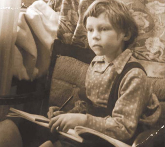

Андрей Пашкевич родился в 1945 году в Москве в семье художника.
Его отец, Петр Исидорович Пашкевич, работал ведущим художником-постановщиком на киностудии им. М. Горького в Москве. В детстве Андрей проводил много времени на съемочной площадке студии и в мастерской отца, где с самого раннего возраста он стал пробовать рисовать его красками и кисточками.
Андрей Пашкевич начал свою творческую карьеру с обучения во Всесоюзном государственном институте кинематографии (ВГИК), который он не только окончил с дипломом кинооператора, но и прошел курс живописи у известного профессора Юрия Пименова.
Он современник вгиковского поколения таких знаменитых режиссеров, как Никита Михалков и Андрей Кончаловский. В качестве кинооператора он работал над несколькими полнометражными художественными картинами, среди которых такие очень известные фильмы, как «Еще люблю, еще надеюсь» и «Мы жили по соседству», а также над рядом других документальных фильмов.
В 1990-е годы он основал собственную телевизионную компанию «Российское музыкальное телевидение (РМТВ), где работал над созданием культурных программ и сериалов для российских телеканалов.
В годы перестройки Андрей начал работать над созданием особой серии картин под названием «Политэкология». Под впечатлением важных изменений, происходивших во времена Горбачева, Андрей выражал в своих картинах собственный взгляд и чувства относительно происходящего. По его словам, он старался создать некую экологию посредством своих картин. Он хотел таким образом «очистить» вызывающие опасения и очень часто неприглядные моменты политической жизни страны. В его работах, с одной стороны, чувствуются ирония и сарказм, а с другой — тонкий юмор. Однако, что наиболее важно, они всегда наполнены гармонией, и в них преобладают символизм и философия.
Все его картины приглашают к размышлению обо всем том, через что прошла страна и ее люди. В этом смысле серию «Политэкология» можно рассматривать как уникальную историческую и философскую хронику.
Андрей Пашкевич был членом Международной федерации художников и принимал участие в различных выставках, особенно активно с начала 1990-х годов в России, Корее и Испании. В 1993 году его пригласили выставить свои работы в городе Антверпене (Бельгия) в рамках мероприятий «Антверпен — культурная столица Европы».
Его работы можно найти в многочисленных частных коллекциях, среди которых коллекции Джорджа Буша-старшего и Библиотеки Ричарда Никсона в США, а также в Португалии, Испании, Франции, Швейцарии, Бельгии, Финляндии, Индии и Южной Корее.
Кроме портретов и серии картин «Политэкология» Андрей Пашкевич также знаменит своими абстрактными композициями, которые еще раз свидетельствуют об уникальном и всестороннем таланте мастера.